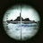

Welcome to the unofficial 3DS Homebrew Launcher website ! This page is a fork of smealun and a hub between all the best and newest ways to get homebrew running on your system.
If you want to see homebrew in action, check out
this video !
How do I get homebrew running on my console ?
Getting homebrew on your 3DS has never been easier ! All you need is one or more of the following titles and a bit of patience. Select the one(s) you have below to get instructions :
NOTE : unfortunately this entrypoint was patched in update 11.4. It still works on 11.3 and below.
You can now access homebrew through the 3DS's stock sound application! All you need to do is grab the right sound file over at nedwill's
soundhax website, and place it at the root of your SD card along with the right otherapp payload. You can grab the right otherapp payload for your console
below on this page. Don't forget to rename it to otherapp.bin and place it at the root of your SD card!
|  |
Steel Diver : Sub Wars |
If you've downloaded the free Steel Diver : Sub Wars eshop game, you can use it as a homebrew entrypoint. Just head over to vegaroxas's
steelhax webpage and follow the instructions in the archive's readme file! You will need to download the right otherapp payload for your console, which you can grab
below on this page.
SSloth browser is an alternative to browserhax ,Simply download the cfw starter pack and put all of the files of the starter pack
on the SD Card. then on the 3DS browser go to
SSloth browser website
new-browserhax-xl (when combined with universal-otherapp) is compatible with version 11.14.0 on New 3DS and New 2DS in all regions.
Simply download the cfw starter pack and put all the files on the SD Card. then on the 3DS Browser go to
new-browserhax-xl
safecerthax is only for old 3ds models it won't work on new 3ds models
Simply download the cfw starter pack and put the files of the pack on the SD Card and do this
Launch the System Settings application
Navigate to Internet Settings -> Connection Settings
Click on your network connection slot and navigate to Change Settings -> Next Page (right arrow) -> DNS
Set “Auto-Obtain DNS” to “No”, then click Detailed Setup
Set both the Primary DNS and Secondary DNS to 054.038.133.070
Click OK, then click Save
When prompted, click “Test” to perform the connection test
The test should succeed
Power off your device
Then With your device still powered off, hold the following buttons:
(Left Shoulder) + (Right Shoulder) + (D-Pad Up) + (A), then press (Power)
Keep holding the buttons until the device boots into Safe Mode
Press “OK” to accept the update
There is no update. This is part of the exploit
Press “I accept” to accept the terms and conditions
The update should fail and an error message should appear
If the update does not fail, it is possible that your ISP is rerouting DNS changes. Try another internet connection, or follow an alternate method, like Seedminer.
Press “OK” to close the error message
If the exploit was successful, you will have booted into SafeB9SInstaller
If the console freezes or crashes, force power off the console, then retry this section
Preparing your SD card
In order for homebrew to run on your system, you will need to place a few files on your SD card :
- boot.3dsx : this file should be placed at the root of your SD card. It's what ninjhax/ironhax/tubehax will run first ! Usually, this is the Homebrew Launcher.
- 3ds/ : this folder will contain all the homebrew applications you want to install to your system. You can either place 3DSX files directly inside of that folder, or create an individual folder for each application you install.
To make things easier, we put together the
homebrew starter kit and the
cfw starter kit you can just download it and extract it at the root of your SD card. Alternatively, you may choose to only download
The Homebrew Launcher menu executable and place it at the root of your SD card.
No matter what, you should have a file named boot.3dsx placed at the root of your SD card.